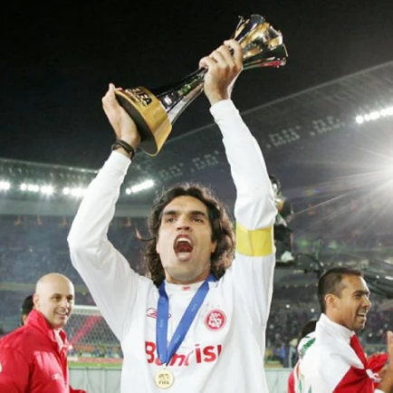
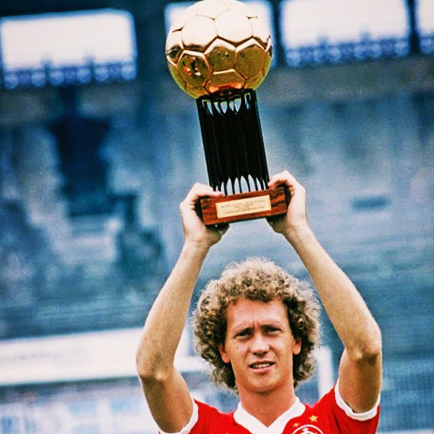
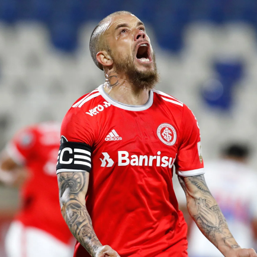
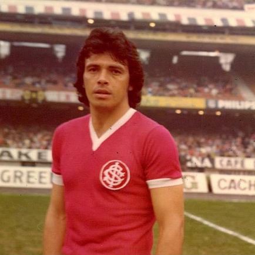

Inter
Aorigem do Sport Club Internacional está associada à integração entre povos de diferentes nacionalidades. Ao contrário dos outros times da capital gaúcha naquela época, voltados sobretudo a descendentes de alemães, o Inter nascia receptivo a variadas etnias. Três irmãos foram os responsáveis diretos pela fundação do Clube: Henrique Poppe Leão, José Eduardo Poppe e Luiz Madeira Poppe. Eles chegaram em Porto Alegre por volta de 1908, época em que a prática do futebol efervescia pelo Brasil.
Títulos
Campeonato Brasileiro: 3
Copa do Brasil: 1
Campeonato Gaucho: 45
Copa Libertadores da América : 2
Mundial: 1

Ídolos
- 
- 
- 
- 
Fernandão
Fernandão, ou Fernando Lúcio da Costa jogou entre os anos de 2004 a 2008, e logo nos primeiros minutos em campo, ele se consolidou como um dos grandes nomes da história do clube: foi dele o gol de número 1000 em clássicos Grenal (2004), e os torcedores o apelidaram de ‘O Predestinado’, posteriormente sendo o futuro capitão do Mundial do Inter.
Falcão
" Falcão jogou entre os anos de 1973 a 1980, e surgiu à época dos centromédios, que eram atletas de meio de campo capazes de produzir tanto na defesa quanto no ataque. Ele realmente era um dos melhores neste quesito.
D' Alessandro
O craque Colorado que foi contratado no finalzinho da era Fernandão, é um grande ídolo Colorado. Ele joga desde 2008 no Sport Club Internacional, e mesmo sendo um meia de temperamento explosivo, tem talento para liquidar a defesa adversária, e aos poucos foi assumindo a liderança do Inter assumir de vez a braçadeira de capitão.
Figueroa
‘Don’ Eliás Ricardo Figueroa Brander jogou entre os anos de 1971 a 1976 e foi o maior zagueiro do Sport Club Internacional, e ao mesmo tempo também foi reconhecido como um dos melhores de sua posição em todos os tempos. Passar por ele era o desafio máximo de qualquer atacante dos outros times, e pará-lo pelo alto quando subia ao ataque, era um verdadeiro pesadelo para qualquer defesa. Se quiser saber mais sobre o craque, leia nosso artigo sobre Eliás Figueroa.
Beira Rio
Há pouco mais de meio século, tudo era água. Porto Alegre acabava, geograficamente, no que hoje é a Avenida Padre Cacique. O Guaíba avançava sobre a cidade, que mal conhecia a expansão para aquele lado. Era quase como se fosse o litoral. Mas então, há 50 anos, uma ação coletiva expandiu os limites Capital. Um conjunto de dirigentes montou um projeto, o poder público cedeu a área e milhares de colorados levantaram os fundos necessários para fazer do lago a nova casa do Inter, que então mandava seus jogos no histórico, mas acanhado, Estádio dos Eucaliptos. Foi um crescimento da cidade, da região e do clube
Torcida
Sendo atualmente a maior e principal torcida do Sport Club Internacional, a Guarda Popular foi fundada em 2004, cresceu rapidamente e tornou-se um divisor de águas na cultura colorada, revolucionando para sempre o ambiente nas arquibancadas e mudando para melhor o clima do Beira-Rio.